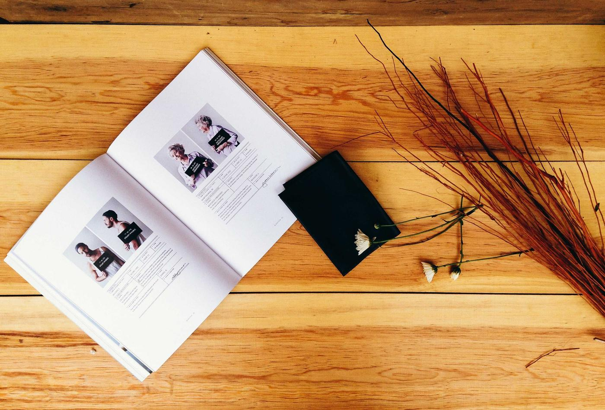

Revista Ágora
Rediseño integral de una revista trimestral de pensamiento: retícula de doce columnas, una familia tipográfica propia para titulares y un sistema de portadas que cambia cada número sin perder la identidad.
- Disciplina
- Dirección de arte editorial
- Estado
- Entregado, en circulación
- Lugar · año
- Madrid · 2026